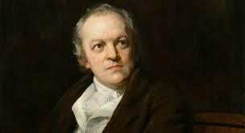
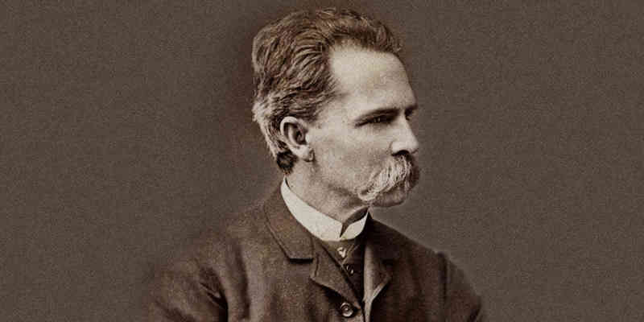

William Blake
Jorge Isaacs

William Blake (Londres, 28 de noviembre de 1757—ibídem, 12 de agosto de 1827) fue un poeta, pintor y grabador británico. Aunque permaneció en gran parte desconocido durante el transcurso de su vida, actualmente el trabajo de Blake cuenta con una alta consideración. Por la relación que en su obra tienen la poesía y sus grabados respectivos suele ponerse a Blake como ejemplo del «artista total». Según el periódico The Guardian, «William Blake es con gran margen el mayor artista que Gran Bretaña ha producido»
Considerar los logros de Blake en poesía o en las artes visuales por separado sería perjudicial para entender la magnitud de su obra: Blake veía estas dos disciplinas como dos medios de un esfuerzo espiritual unificado, y son inseparables para apreciar correctamente su trabajo. Por esta razón, las ediciones ilustradas de la obra de Blake no habían sido especialmente valoradas en el pasado, hasta que los avances en las técnicas de impresión han permitido una mayor difusión, al hacerse estas más accesibles. Desde una edad temprana Blake tuvo visiones, la más precoz fue cuando, en Peckham Rye, teniendo alrededor de nueve años vio un árbol lleno de ángeles «adornando con destellos, como estrellas, cada rama». De acuerdo con el biógrafo victoriano de Blake, Alexander Gilchrist, después de tener la visión regresó a su casa y lo comentó, escapando de una paliza de su padre y por la intervención de su madre. Aunque todas las evidencias sugieren que los padres apoyaban a Blake.
Jorge Ricardo Isaacs Ferrer (Santiago de Cali, 1 de abril de 1837-Ibagué, 17 de abril de 1895) fue un novelista, escritor y poeta colombiano del género romántico. Isaacs vivió durante la época de consolidación de la República. Se sabe muy poco sobre su infancia. Su lugar de nacimiento fue Santiago de Cali.2 Estudió en Cali, luego en Popayán, y por último en Bogotá, entre 1848 y 1852, durante el gobierno de José Hilario López. Su padre era George Henry Isaacs, un judío inglés oriundo de Jamaica.
En su poesía, Isaacs evoca a Valle del Cauca como el espacio idílico en que transcurrió su infancia, y la marcha a Bogotá debió suponer para él un cambio difícil. Regresó a Cali en 1852.
En 1854, luchó en las campañas de Cauca contra la dictadura del general José María Melo, por 7 meses. Su familia atravesó por una difícil situación económica a causa de la guerra civil. En 1856 se casó con Felisa González Umaña, quien contaba por entonces diecinueve años, y que le daría abundante descendencia y perseverancia para que se escudara de ellos.
Intentó dedicarse al comercio, sin mucho éxito, y probó suerte con la literatura. Sus primeros poemas, los cuales datan de los años 1859 a 1860; en la misma época, emprende la escritura de varios dramas históricos.
En 1860 tomó de nuevo las armas para combatir al general Tomás Cipriano de Mosquera, que en ese entonces se había levantado contra el gobierno central, combatió en la batalla de Manizales. En 1861 murió su padre; de ahí se regresó a Cali.